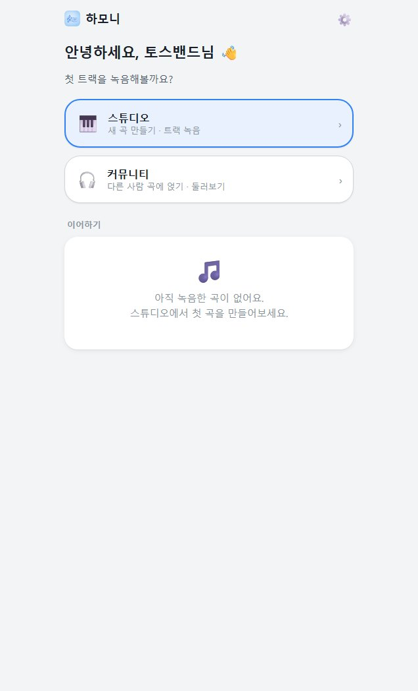
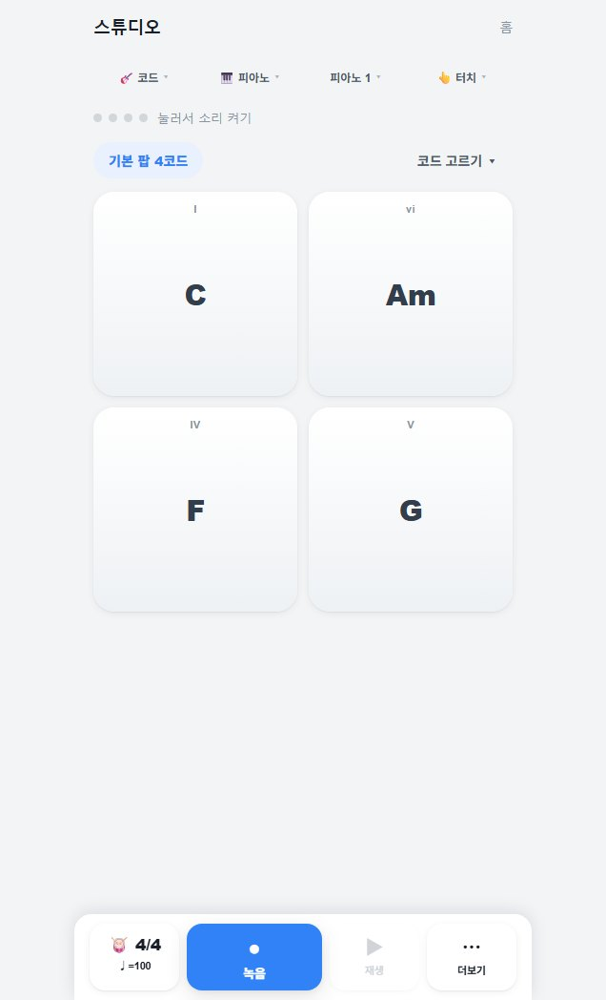
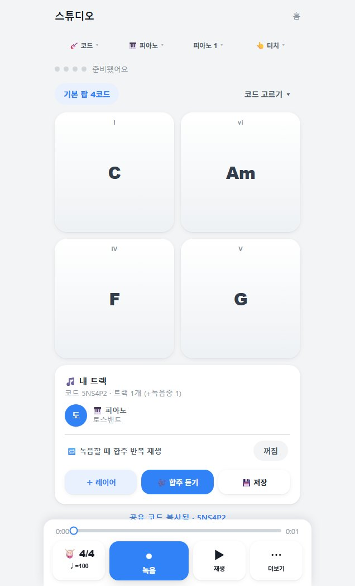
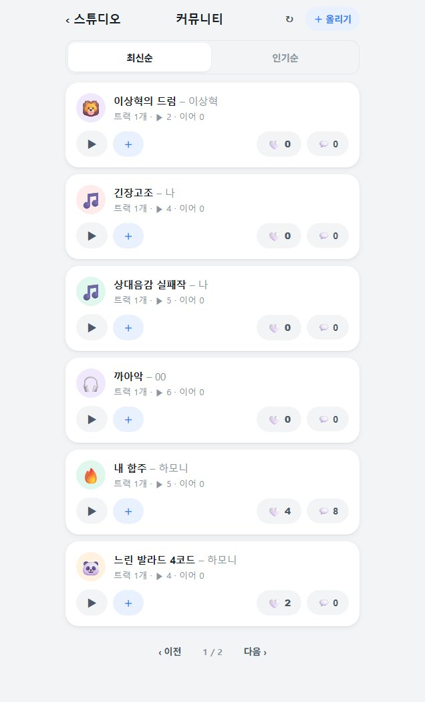
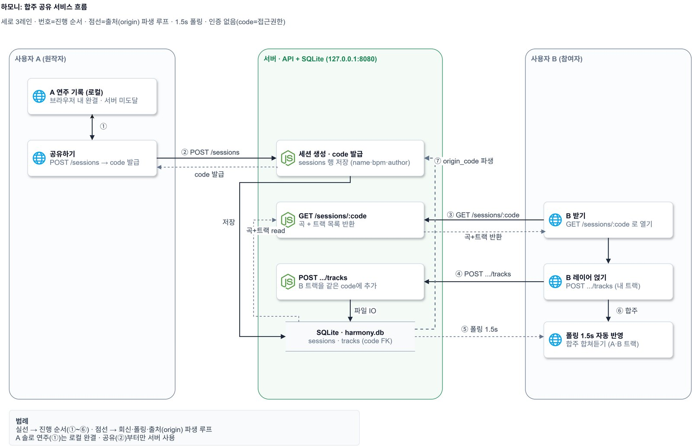
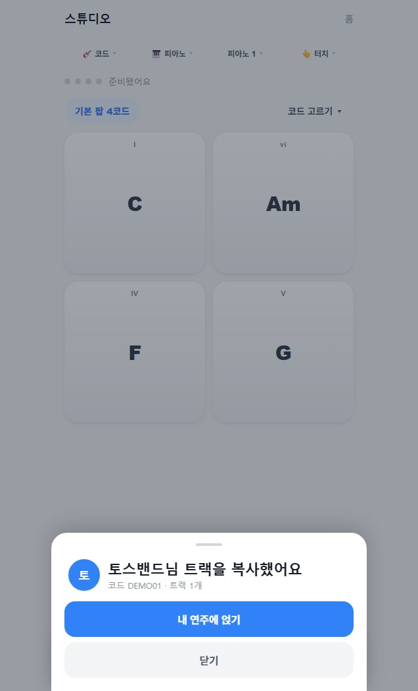
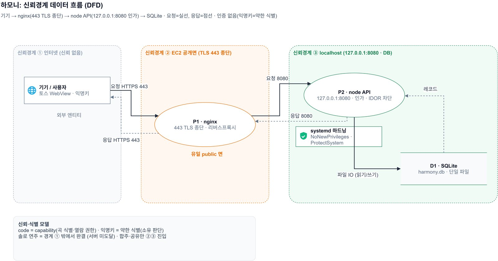
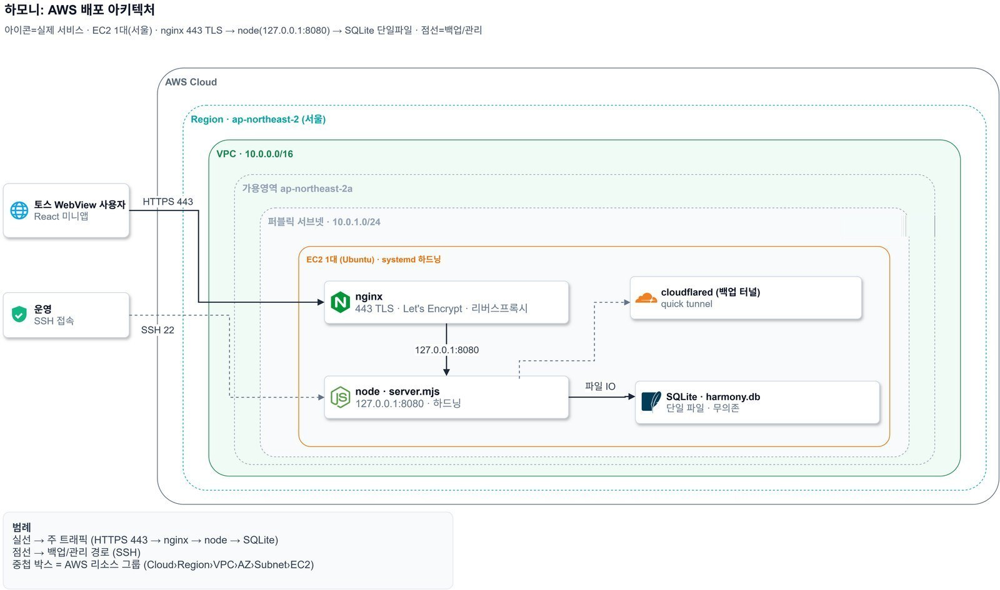

· 4인 팀 팀장 · 백엔드 · 보안 · 출시
하모니
트랙을 한 겹씩 얹어 합주하는 토스 미니앱입니다. 2026년 6월 26일 토스 앱에 출시했습니다.
- 기간
- 2026년 6월 19일 – 26일
- 형태
- 4인 팀 팀장으로 출시 전 보안 문제 해결과 최종 승인을 맡았습니다.
- 기술
- Node(node:http · node:sqlite · node:crypto) · nginx · systemd · AWS EC2 · React · TypeScript · 앱인토스
- 자료
- 팀 저장소




개요
출시 직전 보안 검토에서 걸린 문제를 고치고, 시작 7일 만에 출시했습니다
밴드 합주를 하려면 같은 시간에 같은 곳에 모여야 하고, 악기도 다룰 줄 알아야 합니다. 하모니에서는 코드 패드를 눌러 연주하고, 친구가 올린 트랙 위에 내 연주를 얹어 합주합니다. 회원가입 없이 닉네임만 넣으면 바로 시작합니다.
팀장인 저는 제품 방향과 정책을 정했고, 출시 직전 검토에서 걸린 보안 문제를 풀고 출시를 최종 승인했습니다. 서버 구현은 백엔드 담당 팀원이 이끌었습니다. 일주일 안에 실제로 쓸 수 있는 앱을 내는 게 목표였고, 6월 26일 토스 앱에 출시했습니다.
| 항목 | 값 | 설명 |
|---|---|---|
| 시작부터 출시까지 | 7일 | 중간에 아이디어를 한 번 바꿨습니다. |
| 출시 전 독립 검토 | 3번 | 출시 불가, 조건부 통과, 통과 순으로 판정이 바뀌었습니다. |
| 친구 트랙이 원작자 화면에 뜨기까지 | 1.8초 | 통합 테스트에서 잰 값이고, 화면은 1.5초마다 폴링합니다. |
| 통합 테스트 | 34 / 34 | API, 보안, 클라이언트, 실기기 테스트를 모두 통과했습니다. |
누가 무엇을 맡았나
| 역할 | 맡은 일 |
|---|---|
| 제품 · 정책 · 팀장 저 | 제품과 정책 결정, 출시 전 보안 문제 해결, 배포와 출시의 최종 승인 |
| 백엔드 · 데이터 | 서버 구현, 오디오 엔진과 카메라 손동작 연주 |
| UX · 프론트엔드 | 화면 설계와 커뮤니티 화면 |
| QA · 릴리즈 | 테스트와 릴리즈 |
합주 방식
실시간으로 맞추는 대신, 트랙을 한 겹씩 얹어 합주하게 했습니다
실시간으로 소리를 주고받으며 합주하면 네트워크 왕복 시간 때문에 박자가 어긋납니다. 그래서 각자 메트로놈에 맞춰 자기 트랙을 녹음하고, 같은 공유 코드의 곡에 얹는 방식으로 정했습니다.

- 혼자 하는 연주는 기기 안에서 처리녹음과 편집은 기기 안에서 끝납니다. 공유를 누를 때만 곡이 서버로 갑니다.
- 6자리 공유 코드곡을 올리면 서버가 코드를 만들어 돌려줍니다. 친구는 그 코드로 곡을 열고 트랙을 얹습니다.
- 새 트랙은 폴링으로화면이 1.5초마다 곡을 다시 받아 옵니다. 통합 테스트에서는 친구가 올린 트랙이 1.8초 안에 원작자 화면에 떴습니다.
- 가입 없이 익명 키로토스가 주는 익명 키로 사용자를 구분합니다. 로그인과 회원가입은 이번 범위에서 뺐습니다.

출시 전 보안 검토
보안 검토에서 나온 권한 · 신고 · 재시도 문제
계정 없이 코드만으로 들어오는 구조라, 커뮤니티에 곡을 공개하는 기능을 붙이기 전에 독립 검토를 받았습니다. Codex 검토에서 결함이 나왔고, 판정은 출시 불가였습니다. 저는 검토에서 나온 문제를 하나씩 풀고 다시 검토받는 일을 맡았습니다.
검토가 찾은 문제와 고친 방법
- 권한공개된 곡 코드만 알면 남의 곡에 트랙을 붙일 수 있었습니다공개된 곡은 작성자 키가 같을 때만 붙일 수 있게 하고, 다르면 403을 돌려줍니다. 남의 곡을 쓰고 싶으면
origin_code로 원본을 밝힌 새 곡을 만들게 했습니다. 비공개 곡은 코드가 곧 열쇠라,crypto.randomInt로 만들어 추측하기 어렵게 했습니다. - 신고키만 바꿔 신고하면 남의 댓글을 숨길 수 있었습니다신고자와 요청 제한의 기준을 서버가 확인한 IP로 바꿨습니다. nginx가 클라이언트가 보낸
X-Forwarded-For를 실제 접속 주소로 덮어쓰고, 앱은 127.0.0.1에만 열어 두었습니다. - 재시도다시 보내면 같은 곡이 여러 번 올라갔습니다멱등 토큰을 요청한 사람의 키와 묶고, 첫 트랙 내용의 해시로 같은 곡을 알아봐 이미 있는 코드를 돌려줍니다. 다른 사람이 같은 토큰을 보내도 원래 작성자의 코드는 받아 갈 수 없습니다.
검토를 다시 받기까지
- 첫 검토에서 출시 불가 판정. 공개 곡 오염, 신고 우회, 요청 제한 우회가 막아야 할 문제로 나왔습니다.
- 고친 뒤 두 번째 검토는 조건부 통과. 앱이 8080 포트로 바로 열리지 않는지 확인하라는 조건이 붙었습니다.
- 앱을 127.0.0.1에만 열어 둔 것을 확인받고 세 번째 검토에서 통과했습니다.
- 토스 앱에 출시했습니다.
서버 구조
EC2 한 대의 nginx · Node · SQLite 구성
서버 구현은 백엔드 팀원이 이끌었고, 저는 보안 검토에서 걸린 부분을 고쳤습니다. 서울 리전 EC2 한 대에서 nginx가 TLS를 맡고, 요청을 127.0.0.1:8080의 Node 앱으로 넘깁니다. 데이터는 SQLite 파일 하나에 담습니다. 서버는 Node 내장 모듈만으로 짜서 외부 패키지가 없습니다.


- 전용 계정과 좁은 쓰기 권한앱은 systemd에서 전용 계정
harmony로 돌고, 권한 상승을 막고 시스템 경로를 읽기 전용으로 둡니다. 쓸 수 있는 곳은data디렉터리 하나입니다. - 여러 번 돌려도 안전한 테이블 변경컬럼 추가는 try로 감싼
ALTER TABLE이라, 이미 있는 DB에 다시 실행해도 문제가 없습니다. - 중복 게시는 한 번의 트랜잭션 안에서찾기와 저장 사이에
await가 끼지 않게node:sqlite의 동기 API로 BEGIN과 COMMIT을 걸어, 경쟁 상태를 막았습니다.
systemd 서비스 파일과 nginx 설정 일부
# /etc/systemd/system/harmony-api.service
[Service]
Environment=PORT=8080
Environment=TRUST_PROXY=1
ExecStart=/usr/bin/node /opt/harmony-api/server.mjs
Restart=on-failure
User=harmony
NoNewPrivileges=true
ProtectSystem=full
ProtectHome=true
ReadWritePaths=/opt/harmony-api/data
# nginx · 클라이언트가 보낸 값을 실제 접속 주소로 덮어씁니다
location /sessions {
proxy_pass http://127.0.0.1:8080;
proxy_set_header X-Real-IP $remote_addr;
proxy_set_header X-Forwarded-For $remote_addr;
}테스트와 출시
고친 뒤 다시 돌린 테스트와 출시까지의 일정
일주일 동안 네 명이 한 저장소를 함께 고쳤습니다. 작업 지시와 독립 검토 결과, 결정 요청은 모두 저장소에 문서로 남겼습니다.
보안 문제를 고친 뒤 다시 돌린 테스트
| 무엇을 해 봤나 | 결과 |
|---|---|
| 다른 키로 공개 곡에 트랙 추가 | 403 |
| 소유자 키로 트랙 추가 | 201 |
| 숨긴 곡을 코드로 바로 열기 | 404 |
| 같은 IP에서 키만 바꿔 세 번 신고 | 숨겨지지 않음 |
| XFF를 바꿔 가며 13번 게시 | 12번째까지 201 · 13번째 429 |
| 다른 작성자가 같은 멱등 토큰을 보냄 | 원래 곡을 받지 못함 |
게시 한도는 IP당 분당 12건입니다. 실기기는 아이폰 13과 갤럭시 S23 Ultra로, 공유부터 트랙 반영까지 직접 확인했습니다.
출시까지
- 시작했습니다.
- 첫 아이디어를 접고 악기 합주로 방향을 바꿨습니다.
- 백엔드 AWS 배포를 승인했습니다.
- 앱인토스에 앱을 등록하고 심사를 제출했습니다.
- 테스트 출시를 거쳐, 같은 날 토스 앱에 출시했습니다.
- 구현자와 다른 검토자가 확인독립 검토자가 직접 재현하고, 테스트와 보안 검사, 헬스체크를 통과한 것만 병합했습니다. 03장의 보안 문제도 이 독립 검토에서 나왔습니다.